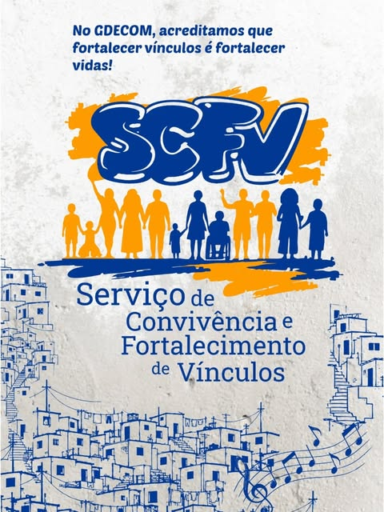

CONVIVÊNCIA E VÍNCULOS
SCFV — Serviço de Convivência e Fortalecimento de Vínculos
No GDECOM, acreditamos que fortalecer vínculos é fortalecer vidas. O SCFV reúne grupos de convivência que trabalham o pertencimento, a autoestima e os laços entre pessoas, famílias e território.
- Desenvolvido em parceria com a Prefeitura de Belo Horizonte, no âmbito do SUAS;
- Fortalecimento de vínculos familiares e comunitários e ampliação das relações sociais;
- Acesso a direitos para jovens de 15 a 17 anos;
- Convivência, arte, brincadeira e escuta.